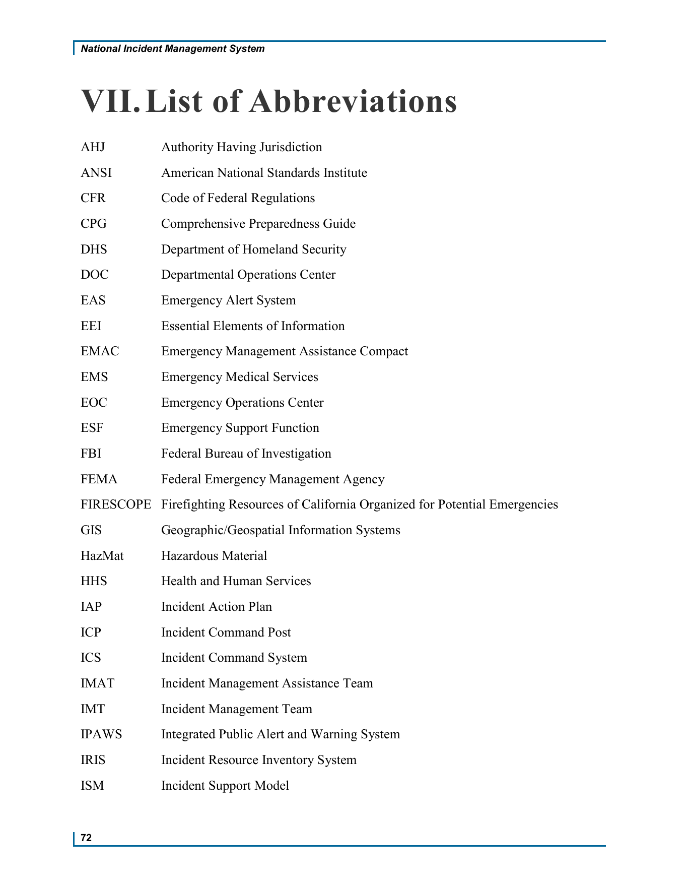
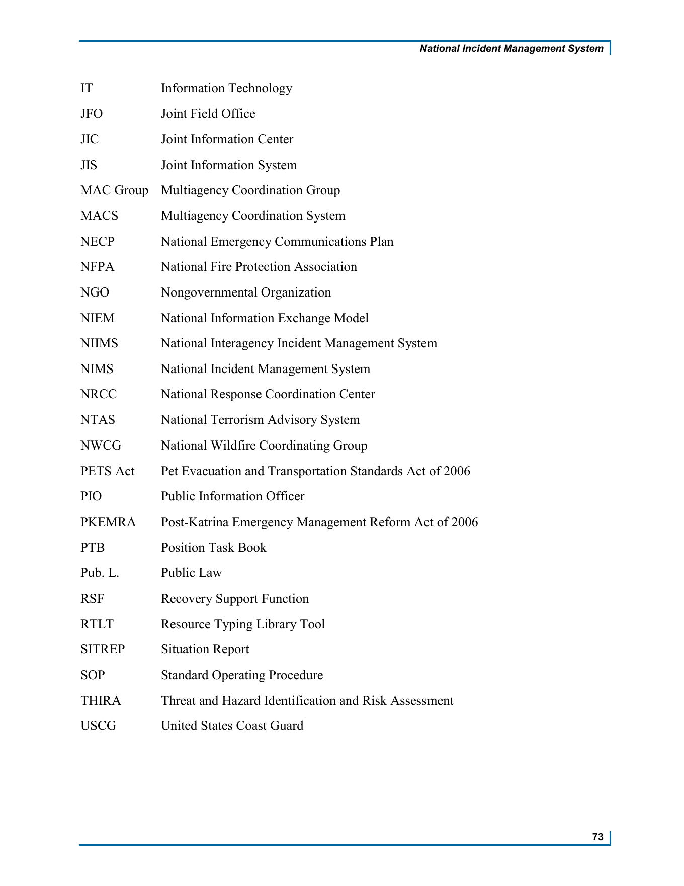

원문 약어 · 영문 확장형AHJAuthority Having Jurisdiction
학습용 한국어AHJ관할 권한기관
학습분류 D · 자원관리·상호지원
52개 약어의 원문 명칭과 한국어를 함께 찾습니다.
원문 순서와 학습용 개념군을 오가며 읽어보세요.
전체: 약어 52개
제7장 약어 목록(List of Abbreviations)은 약어와 영문 확장형을 대응시키는 목록이다. 제공 PDF는 표지 없는 본문 2쪽이며 인쇄 p.72/PDF p.1에 26개, 인쇄 p.73/PDF p.2에 26개, 총 52개다. 약어와 영문 확장형의 순서·대소문자·공백·구두점·단복수를 원문과 대조했다.
한국어 번역과 A–F 분류는 학습용 제안이며 공식 한국어 명칭·FEMA 공식 분류가 아니다. 목록 자체는 용어의 상세 정의·역사·법적 권한·기관 간 관계·현재 도구 운영 현황을 제공하지 않는다.
기존 제6장에는 사용자 제공 대역 HTML의 AHJ–ISM26개가 있다. 이번 원문은 그26개에 IT–USCG26개를 더한 전체52개다. 기존 대역과 개별 링크는 보존하고 제7장의 원문 대조 목록으로 보완한다. 같은26개를 서로 독립적인 증거52개로 합산하지 않는다.
다른 단어를 입력하거나 검색을 지워 전체52개를 확인하세요.
원문 약어 · 영문 확장형AHJAuthority Having Jurisdiction
학습용 한국어AHJ관할 권한기관
학습분류 D · 자원관리·상호지원
원문 약어 · 영문 확장형ANSIAmerican National Standards Institute
학습용 한국어ANSI미국 국가표준협회
학습분류 F · 법령·표준·기관
원문 약어 · 영문 확장형CFRCode of Federal Regulations
학습용 한국어CFR미국 연방규정집
학습분류 F · 법령·표준·기관
원문 약어 · 영문 확장형CPGComprehensive Preparedness Guide
학습용 한국어CPG종합 대비 지침
학습분류 E · 계획·평가·절차
원문 약어 · 영문 확장형DHSDepartment of Homeland Security
학습용 한국어DHS미국 국토안보부
학습분류 A · 기본체계·제도 발전
원문 약어 · 영문 확장형DOCDepartmental Operations Center
학습용 한국어DOC부처·기관 운영센터
학습분류 B · 지휘·조정·운영
원문 약어 · 영문 확장형EASEmergency Alert System
학습용 한국어EAS비상경보시스템
학습분류 C · 정보·통신·경보
원문 약어 · 영문 확장형EEIEssential Elements of Information
학습용 한국어EEI필수 정보요소
학습분류 C · 정보·통신·경보
원문 약어 · 영문 확장형EMACEmergency Management Assistance Compact
학습용 한국어EMAC비상관리지원협약
학습분류 D · 자원관리·상호지원
원문 약어 · 영문 확장형EMSEmergency Medical Services
학습용 한국어EMS응급의료서비스
학습분류 D · 자원관리·상호지원
원문 약어 · 영문 확장형EOCEmergency Operations Center
학습용 한국어EOC비상운영센터
학습분류 B · 지휘·조정·운영
원문 약어 · 영문 확장형ESFEmergency Support Function
학습용 한국어ESF긴급지원기능
학습분류 D · 자원관리·상호지원
원문 약어 · 영문 확장형FBIFederal Bureau of Investigation
학습용 한국어FBI미국 연방수사국
학습분류 F · 법령·표준·기관
원문 약어 · 영문 확장형FEMAFederal Emergency Management Agency
학습용 한국어FEMA미국 연방재난관리청
학습분류 A · 기본체계·제도 발전
원문 약어 · 영문 확장형FIRESCOPEFirefighting Resources of California Organized for Potential Emergencies
학습용 한국어FIRESCOPE캘리포니아 잠재적 비상상황 대비 소방자원 조직화체계
학습분류 A · 기본체계·제도 발전
원문 약어 · 영문 확장형GISGeographic/Geospatial Information Systems
학습용 한국어GIS지리·공간정보시스템
학습분류 C · 정보·통신·경보
원문 약어 · 영문 확장형HazMatHazardous Material
학습용 한국어HazMat유해물질
학습분류 D · 자원관리·상호지원
원문 약어 · 영문 확장형HHSHealth and Human Services
학습용 한국어HHS보건·복지(원문 명칭 직역)
학습분류 F · 법령·표준·기관
원문 약어 · 영문 확장형IAPIncident Action Plan
학습용 한국어IAP사고대응계획
학습분류 E · 계획·평가·절차
원문 약어 · 영문 확장형ICPIncident Command Post
학습용 한국어ICP현장지휘소
학습분류 B · 지휘·조정·운영
원문 약어 · 영문 확장형ICSIncident Command System
학습용 한국어ICS사고지휘체계
학습분류 B · 지휘·조정·운영
원문 약어 · 영문 확장형IMATIncident Management Assistance Team
학습용 한국어IMAT사고관리지원팀
학습분류 B · 지휘·조정·운영
원문 약어 · 영문 확장형IMTIncident Management Team
학습용 한국어IMT사고관리팀
학습분류 B · 지휘·조정·운영
원문 약어 · 영문 확장형IPAWSIntegrated Public Alert and Warning System
학습용 한국어IPAWS통합 대국민 경보·경고시스템
학습분류 C · 정보·통신·경보
원문 약어 · 영문 확장형IRISIncident Resource Inventory System
학습용 한국어IRIS사고자원목록시스템
학습분류 D · 자원관리·상호지원
원문 약어 · 영문 확장형ISMIncident Support Model
학습용 한국어ISM사고지원모형
학습분류 B · 지휘·조정·운영
원문 약어 · 영문 확장형ITInformation Technology
학습용 한국어IT정보기술
학습분류 C · 정보·통신·경보
원문 약어 · 영문 확장형JFOJoint Field Office
학습용 한국어JFO합동현장사무소
학습분류 B · 지휘·조정·운영
원문 약어 · 영문 확장형JICJoint Information Center
학습용 한국어JIC공동홍보센터
학습분류 C · 정보·통신·경보
원문 약어 · 영문 확장형JISJoint Information System
학습용 한국어JIS공동홍보체계
학습분류 C · 정보·통신·경보
원문 약어 · 영문 확장형MAC GroupMultiagency Coordination Group
학습용 한국어MAC Group다기관 조정그룹
학습분류 B · 지휘·조정·운영
원문 약어 · 영문 확장형MACSMultiagency Coordination System
학습용 한국어MACS다기관 조정체계
학습분류 B · 지휘·조정·운영
원문 약어 · 영문 확장형NECPNational Emergency Communications Plan
학습용 한국어NECP국가 비상통신계획
학습분류 C · 정보·통신·경보
원문 약어 · 영문 확장형NFPANational Fire Protection Association
학습용 한국어NFPA미국방화협회
학습분류 F · 법령·표준·기관
원문 약어 · 영문 확장형NGONongovernmental Organization
학습용 한국어NGO비정부기구
학습분류 F · 법령·표준·기관
원문 약어 · 영문 확장형NIEMNational Information Exchange Model
학습용 한국어NIEM국가정보교환모델
학습분류 C · 정보·통신·경보
원문 약어 · 영문 확장형NIIMSNational Interagency Incident Management System
학습용 한국어NIIMS국가 기관 간 사고관리체계
학습분류 A · 기본체계·제도 발전
원문 약어 · 영문 확장형NIMSNational Incident Management System
학습용 한국어NIMS국가사고관리체계
학습분류 A · 기본체계·제도 발전
원문 약어 · 영문 확장형NRCCNational Response Coordination Center
학습용 한국어NRCC국가대응조정센터
학습분류 B · 지휘·조정·운영
원문 약어 · 영문 확장형NTASNational Terrorism Advisory System
학습용 한국어NTAS국가 테러경보체계
학습분류 C · 정보·통신·경보
원문 약어 · 영문 확장형NWCGNational Wildfire Coordinating Group
학습용 한국어NWCG국가 산불조정그룹
학습분류 D · 자원관리·상호지원
원문 약어 · 영문 확장형PETS ActPet Evacuation and Transportation Standards Act of 2006
학습용 한국어PETS Act2006년 반려동물 대피·수송 기준법
학습분류 F · 법령·표준·기관
원문 약어 · 영문 확장형PIOPublic Information Officer
학습용 한국어PIO공공정보담당자
학습분류 C · 정보·통신·경보
원문 약어 · 영문 확장형PKEMRAPost-Katrina Emergency Management Reform Act of 2006
학습용 한국어PKEMRA2006년 카트리나 이후 비상관리 개혁법
학습분류 F · 법령·표준·기관
원문 약어 · 영문 확장형PTBPosition Task Book
학습용 한국어PTB직위별 과업기록서
학습분류 D · 자원관리·상호지원
원문 약어 · 영문 확장형Pub. L.Public Law
학습용 한국어Pub. L.미국 법률의 Public Law 표기
학습분류 F · 법령·표준·기관
원문 약어 · 영문 확장형RSFRecovery Support Function
학습용 한국어RSF복구지원기능
학습분류 D · 자원관리·상호지원
원문 약어 · 영문 확장형RTLTResource Typing Library Tool
학습용 한국어RTLT자원유형화 정의목록 도구
학습분류 D · 자원관리·상호지원
원문 약어 · 영문 확장형SITREPSituation Report
학습용 한국어SITREP상황보고서
학습분류 C · 정보·통신·경보
원문 약어 · 영문 확장형SOPStandard Operating Procedure
학습용 한국어SOP표준운영절차
학습분류 E · 계획·평가·절차
원문 약어 · 영문 확장형THIRAThreat and Hazard Identification and Risk Assessment
학습용 한국어THIRA위협·위해요인 식별 및 위험평가
학습분류 E · 계획·평가·절차
원문 약어 · 영문 확장형USCGUnited States Coast Guard
학습용 한국어USCG미국 해안경비대
학습분류 F · 법령·표준·기관
아래 분류는 사용자 참고 노트의 A–F 분류를 학습용으로 채택한 것이다. 한 약어를 대표 분야 한 곳에 배치했으며, 실제 기능이 그 분야로만 제한된다는 뜻은 아니다. 기관·시설·기능·법률·도구를 같은 종류의 개체로 취급하지 않는다.
| 개념군 | 학습용 주제 | 수 | 약어 |
|---|---|---|---|
| A | 기본체계·제도 발전 | 5 | DHS · FEMA · FIRESCOPE · NIIMS · NIMS |
| B | 지휘·조정·운영 | 11 | DOC · EOC · ICP · ICS · IMAT · IMT · ISM · JFO · MAC Group · MACS · NRCC |
| C | 정보·통신·경보 | 12 | EAS · EEI · GIS · IPAWS · IT · JIC · JIS · NECP · NIEM · NTAS · PIO · SITREP |
| D | 자원관리·상호지원 | 10 | AHJ · EMAC · EMS · ESF · HazMat · IRIS · NWCG · PTB · RSF · RTLT |
| E | 계획·평가·절차 | 4 | CPG · IAP · SOP · THIRA |
| F | 법령·표준·기관 | 10 | ANSI · CFR · FBI · HHS · NFPA · NGO · PETS Act · PKEMRA · Pub. L. · USCG |
학습 질문: A는 기본체계 명칭, B는 지휘·조정의 구조, C는 정보·경보, D는 자원·지원, E는 계획·절차, F는 법령·표준·기관을 살펴보는 출발점이다. 이 분류표를 공식 조직도나 역사적 발전순서로 읽지 않는다.
| 비교 대상 | 먼저 확인할 질문 |
|---|---|
| NIMS / NIIMS / FIRESCOPE | 영문 명칭이 어떻게 다른가? 역사적 관계는 어떤 본문 근거로 확인할 것인가? |
| ICS / ICP / EOC / DOC | 체계와 시설·센터를 어떻게 구별할 것인가? |
| IMT / IMAT | Management Team과 Management Assistance Team은 무엇이 다른가? |
| MAC Group / MACS | Group과 System은 같은 개체를 뜻하는가? |
| JIS / JIC / PIO | 체계·센터·담당자라는 명칭을 어떻게 연결해 읽을 것인가? |
| IRIS / RTLT / PTB | Inventory·Typing·Task Book은 각각 무엇을 확인하는가? |
| ESF / RSF / EMAC | 지원기능의 명칭과 자원 공유 협약을 어떻게 구별할 것인가? |
| THIRA / CPG / IAP / SOP | 평가·지침·계획·절차의 명칭이 어떤 차이를 나타내는가? |
| EAS / IPAWS / NTAS | 명칭에 Alert·Warning·Advisory가 각각 어떻게 쓰였는가? |
이9개 비교는 심화학습 질문이다. 약어 확장형만으로 기관 권한·운영 절차·역사적 선후관계를 확정하지 않는다. 자세한 설명은 관련 본문이나 별도의 근거를 대조해야 한다.
표기에서 특히 확인할 부분은 다음과 같다.
MAC Group, PETS Act, Pub. L.은 공백·마침표를 포함한 원문 표기를 유지한다.Geographic/Geospatial Information Systems다. slash와 복수형을 유지한다.Hazardous Material이며 임의로 Materials로 고치지 않는다.Health and Human Services다. 영문에 Department of를 추가하지 않는다. 한국어도 여기서는 원문 명칭을 직역해 ‘보건·복지’로 표시한다.Pet Evacuation and Transportation Standards Act of 2006다.Public Law를 보존하고 미국 법률의 표기라는 학습 안내를 둔다. 한국 법학의 일반적인 ‘공법’ 개념으로 자동 치환하지 않는다. 구체적 법적 효과는 이 목록에서 다루지 않는다.원문은 번호가 붙은 별도 Figure/Table 없이 두 열의 약어 목록으로 배치되어 있다. 아래 이미지는 전체 페이지를160 dpi로 렌더링했으며 원래 순서·명칭·배치·인쇄 쪽수를 보존했다. 한국어 비교표와 원문 이미지를 구별한다.


기준 자료: FEMA, National Incident Management System, Third Edition, October 2017, VII. List of Abbreviations, 인쇄 pp.72–73. 제공 PDF는2쪽이다. 판본은 기존 전체 NIMS 교재와 연결하며 PDF 생성일과 원전 발행연도를 구별한다.
사용자 제공 ChatGPT v1.0의52개 대응표·개념군·비교 질문을 참고했다. 영문52쌍은 제공 PDF의 텍스트와 페이지 화면으로 다시 확인했다. 자체 품질점수9.43은 객관적 검증 결과로 사용하지 않는다. 현재 기관 명칭·법령 효력·도구 운영 상태는 이번 확인 범위가 아니다.
기존 장의 정의와 설명을 연결한 학습용 보충해설입니다. 뜻풀이 → 구별·적용 → 확인 질문 순서로 읽고, 각 항목의 근거 링크에서 원래 문맥을 확인하세요. 가상 사례와 확인 질문은 수업용 재구성이며 원문 인용이 아닙니다.
NIMS는 공동 사고관리를 위한 넓은 체계이고, ICS는 현장 관리 기능과 지휘 관계를 조직하는 핵심 구조다. 약어를 풀어 쓰는 것에서 두 대상의 범위 차이까지 연결한다.
구별·적용 제7장 자체는 약어와 영문 확장형 목록이다. 기능 설명은 제1·3·6장에서 가져와 함께 읽는 보충해설이다.
확인 질문 ICS 조직도를 완성하면 NIMS의 자원·지원·정보관리까지 모두 설명한 것인가?
근거 · 제7장 · abbr-nims · 제7장 · abbr-ics · 제6장 · term-83
MAC Group은 다기관조정그룹이고, MACS는 다기관조정체계다. Group은 정책·우선순위 판단에 참여하는 구조를, System은 더 넓은 조정의 틀을 가리킨다.
구별·적용 MAC Group을 MACS의 다른 표기로 바꾸면 조직 하나와 포괄적 체계가 뒤섞인다. 기관 이름을 나열할 때도 두 약어를 구별한다.
확인 질문 이 문장의 MAC은 특정 그룹을 뜻하는가, 다기관 조정의 전체 체계를 뜻하는가?
근거 · 제7장 · abbr-mac-group · 제7장 · abbr-macs · 제3장 · mac
PIO는 공보 역할, JIS는 정보 활동을 조정하는 체계, JIC는 공동정보 활동의 물리적·가상 거점이다. 약어의 마지막 단어 Officer·System·Center가 구별을 돕는다.
구별·적용 같은 공공정보 분야에 속하더라도 서로 대체할 수 있는 이름이 아니다. 인력 지정, 조정 절차 마련, 거점 설치를 각각 확인한다.
확인 질문 담당관을 정하는 일과 공동 메시지 조정 절차를 만드는 일 중 무엇이 빠져 있는가?
근거 · 제7장 · abbr-pio · 제7장 · abbr-jis · 제7장 · abbr-jic · 제3장 · jis
IMT와 IMAT는 각각 Incident Management Team과 Incident Management Assistance Team이다. 팀의 이름을 확인한 뒤 제3장에서 구성·임무·권한의 설명을 함께 읽는다.
구별·적용 IMAT라는 이름의 Assistance만 보고 어떤 경우에도 지휘 권한이 없다고 단정하지 않는다. 실제로 부여된 권한과 임무를 확인해야 한다.
확인 질문 이 팀은 무엇을 지원하며 이 사고에서 어떤 권한을 위임받았는가?
근거 · 제7장 · abbr-imt · 제7장 · abbr-imat · 제3장 · ics
CPG는 대비 지침, THIRA는 위협·위해요인 식별 및 위험평가, IAP는 사고의 작전기간 계획, SOP는 표준운영절차를 가리킨다. 문서의 약어만이 아니라 쓰는 목적을 구별한다.
구별·적용 CPG 번호에 따라 다루는 문제가 달라진다. 평소의 계획 지침과 특정 사고의 IAP, 반복 업무를 위한 SOP를 한 종류의 계획서로 묶지 않는다.
확인 질문 이 자료는 계획을 만드는 안내인가, 위험을 평가하는 과정인가, 이번 임무의 계획인가?
근거 · 제7장 · abbr-cpg · 제7장 · abbr-thira · 제7장 · abbr-iap · 제7장 · abbr-sop · 제8장 · connections
RTLT는 자원 유형·직위 자격 정의, IRIS는 실제 자원의 목록·검색, PTB는 직위 수행 과업 확인과 연결된다. 기준·보유 현황·개인의 수행 확인이라는 질문이 다르다.
구별·적용 기준 목록에 자원 유형이 있다고 해서 우리 기관이 그 자원을 보유한 것은 아니다. 개인의 과업 확인 기록 역시 조직의 전체 자원목록을 대신하지 않는다.
확인 질문 필요한 정보는 자원의 기준인가, 실제 보유·가용 현황인가, 개인의 과업 수행인가?
근거 · 제7장 · abbr-rtlt · 제7장 · abbr-iris · 제7장 · abbr-ptb · 제2장 · part-3 · 제8장 · connections
AHJ는 Authority Having Jurisdiction, HHS는 원문 표기상 Health and Human Services, Pub. L.은 Public Law다. 영문 확장형의 실제 표기를 먼저 보존한다.
구별·적용 기관명을 익숙한 형태로 임의 증보하거나 Public Law를 한국의 일반적 ‘공법’ 개념과 바로 같게 두지 않는다. 기능·법적 효력의 설명은 별도 근거가 필요하다.
확인 질문 약어의 공식 확장형에 없는 단어를 번역 과정에서 덧붙이지 않았는가?
근거 · 제7장 · comparisons
NIIMS는 National Interagency Incident Management System, NIMS는 National Incident Management System이다. 제공 제1장은 기존 ICS·다기관 조정의 성과를 계승하는 발전 맥락을 설명한다.
구별·적용 약어에서 I 하나가 빠졌다는 사실만으로 제도 변화의 원인·범위·성과를 모두 설명하지 않는다. NIIMS에도 모든 사고·위험으로 확대하려는 목적이 있었다는 제공 설명을 함께 보존한다.
확인 질문 이름의 변화 외에 문서가 설명한 계승과 변화는 무엇인가?
근거 · 제7장 · abbr-niims · 제7장 · abbr-nims · 제1장 · d